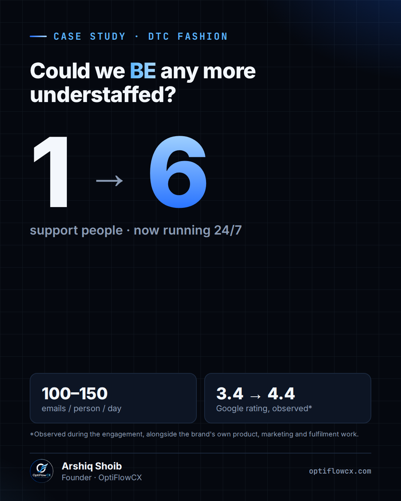

Pop-culture lesson · DTC e-commerce
Friends — The One with the Cop (S5E16), Ross's 'PIVOT!'
Every DTC brand has a "PIVOT!" moment in Q4. You know the scene. Ross, Rachel and Chandler are trying to get a couch up a staircase. Ross has a plan: yell "PIVOT!" louder each time. The couch ends up cut in half. That's what BFCM looks like for most support teams: → Order volume triples overnight → Everyone jumps into the inbox → Nobody agreed on who owns returns, refunds or WISMO → The founder's plan is to answer faster Yelling "PIVOT!" at your helpdesk isn't a plan. We've scaled a DTC support operation from 1 person to a 6-person 24/7 team. The couch made it up the stairs because of three boring things we set up before the rush: 1. SOPs for the 5 ticket types that make up ~80% of volume 2. Macros written in the brand's voice, not "Dear Valued Customer" 3. A handover doc between shifts so nothing gets left on the landing Black Friday is about 8 weeks away. What's your couch this year? The thing you know will get stuck on the stairs? #DTC #Ecommerce #CustomerExperience #BFCM #Shopify
1007 / 3,000 chars
First commentIf you want the 5-ticket-type SOP template we use for DTC brands, comment "PIVOT" and I'll send it over.